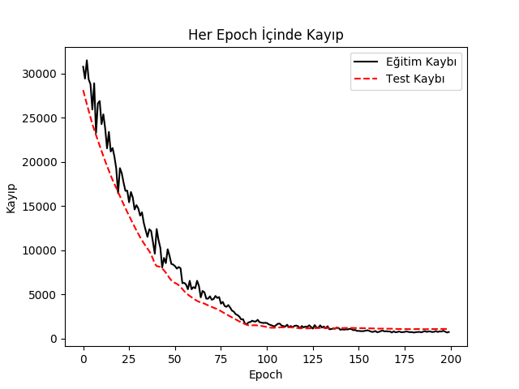
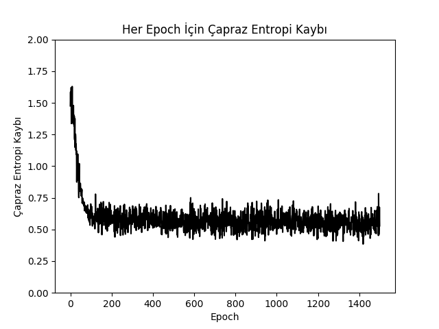
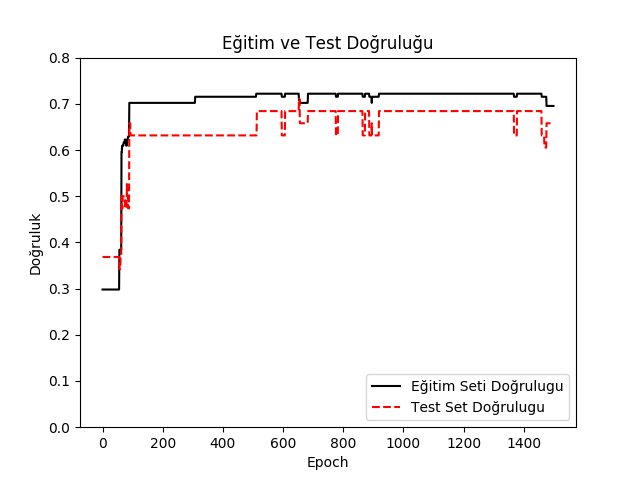

Tensorflow ile Regresyon, YSA
Toptan basit lineer regresyon hesabını Tensorflow [5] ile nasıl yaparız? Regresyonu California emlak veri seti üzerinde işleteceğiz, bu veride bölge bazlı olarak ev sahiplerinin ortalama yaşı, geliri, gibi değişkenler ile hedef değişkeni olan ev fiyatı kayıtlı. Hedef ve kaynak değişkenler arasındaki lineer ilişki lineer regresyon ile hesaplanabilir, tanıdık formül,
$$ \hat{\theta} = (X^TX )^{-1} X^T y $$
Veriye bir yanlılık (sadece 1 değeri içeren yeni bir kolon) ekleyip üstteki hesabı yapalım.
import tensorflow as tf
from sklearn.datasets import fetch_california_housing
from sklearn.preprocessing import StandardScaler
def reset_graph(seed=42):
tf.reset_default_graph()
tf.set_random_seed(seed)
np.random.seed(seed)
housing = fetch_california_housing(data_home="/home/burak/Downloads/scikit-data")
print housing['data'].shape
print housing['target'][:5]
m, n = housing.data.shape
housing_data_plus_bias = np.c_[np.ones((m, 1)), housing.data]
X = tf.constant(housing_data_plus_bias, dtype=tf.float32, name="X")
y = tf.constant(housing.target.reshape(-1, 1), dtype=tf.float32, name="y")
XT = tf.transpose(X)
theta = tf.matmul(tf.matmul(tf.matrix_inverse(tf.matmul(XT, X)), XT), y)
with tf.Session() as sess:
theta_value = theta.eval()
print 'theta'
print theta_value
(20640, 8)
[ 4.526 3.585 3.521 3.413 3.422]
theta
[[ -3.68059006e+01]
[ 4.36796039e-01]
[ 9.45724174e-03]
[ -1.07348330e-01]
[ 6.44418657e-01]
[ -3.95741154e-06]
[ -3.78908939e-03]
[ -4.20193195e-01]
[ -4.33070064e-01]]
TF'in matris çarpımı için matmul, tersini alma için
matrix_inverse çağrılarını görüyoruz. Üstteki kodu olduğu gibi alıp
pek çok işlemci üzerinde direk paralel şekilde işletebiliriz, aynı işi pür
numpy bazlı kodla yapmak daha külfetli olurdu.
Gradyan İnişi
Klasik toptan usül ile hesabı gördük. Peki gradyan inişi ile lineer regresyon nasıl yaparız? Burada iki yaklaşımı göstereceğiz, biri daha zor, diğeri daha kolay. Zor olan matematiksel olarak elle kendimizin gradyan türevini alması, daha kolay olanı türevi TF içindeki otomatik türev alma mekanizmasını kullanarak o işi de TF'e yaptırmak.
Veriyi hazırlayalım ve çiziti oluşturalım; başlangıç $\theta$ değeri rasgele atansın, $X,y$ değerleri verinin kendisi olacak, tahmin ve hata için fonksiyonlar olsun.
scaler = StandardScaler()
scaled_housing_data = scaler.fit_transform(housing.data)
scaled_housing_data_plus_bias = np.c_[np.ones((m, 1)), scaled_housing_data]
reset_graph()
X = tf.constant(scaled_housing_data_plus_bias, dtype=tf.float32, name="X")
y = tf.constant(housing.target.reshape(-1, 1), dtype=tf.float32, name="y")
theta = tf.Variable(tf.random_uniform([n + 1, 1], -1.0, 1.0, seed=42), name="theta")
y_pred = tf.matmul(X, theta, name="predictions")
error = y_pred - y
mse = tf.reduce_mean(tf.square(error), name="mse")
Elle türevi alınmış gradyan nedir? [1, sf. 261]'e göre formül
$$ \nabla_\theta MSE(\theta) = \frac{2}{m} X^T (X \cdot \theta - y) $$
ve gradyan güncellemesi
$$ \theta^{t+1} = \theta - \eta \nabla_\theta MSE(\theta) $$
Alttaki TF kodu bir döngü içinde gradyan güncellemesi yapacak ve hata karelerinin ortalaması (mean square error -MSE-) hesaplayıp ekrana basacak. MSE'in gittikçe aşağı inmesi lazım, çünkü gradyanın tersi yönünde hatayı azaltacak şekilde hareket ediyoruz.
n_epochs = 1000
learning_rate = 0.01
gradients = 2/np.float(m) * tf.matmul(tf.transpose(X), error)
training_op = tf.assign(theta, theta-(learning_rate*gradients))
init = tf.global_variables_initializer()
with tf.Session() as sess:
sess.run(init)
for epoch in range(n_epochs):
if epoch % 100 == 0: print("Epoch", epoch, "MSE =", mse.eval())
sess.run(training_op)
best_theta = theta.eval()
print 'theta'
print best_theta
('Epoch', 0, 'MSE =', 9.1615429)
('Epoch', 100, 'MSE =', 0.71450073)
('Epoch', 200, 'MSE =', 0.56670469)
('Epoch', 300, 'MSE =', 0.55557162)
('Epoch', 400, 'MSE =', 0.54881161)
('Epoch', 500, 'MSE =', 0.54363626)
('Epoch', 600, 'MSE =', 0.53962916)
('Epoch', 700, 'MSE =', 0.53650916)
('Epoch', 800, 'MSE =', 0.53406781)
('Epoch', 900, 'MSE =', 0.53214705)
theta
[[ 2.06855249]
[ 0.88740271]
[ 0.14401658]
[-0.34770882]
[ 0.36178368]
[ 0.00393812]
[-0.04269557]
[-0.66145277]
[-0.63752776]]
Otomatik Türev ile Gradyan
Sembolik türev yerine TF içindeki autodiff paketine türevi aldıralım
ve gradyan inişini böyle yapalım,
gradients = tf.gradients(mse, [theta])[0] # otomatik turev
training_op = tf.assign(theta, theta-(learning_rate*gradients))
init = tf.global_variables_initializer()
with tf.Session() as sess:
sess.run(init)
for epoch in range(n_epochs):
if epoch % 100 == 0: print("Epoch", epoch, "MSE =", mse.eval())
sess.run(training_op)
best_theta = theta.eval()
print best_theta
('Epoch', 0, 'MSE =', 9.1615429)
('Epoch', 100, 'MSE =', 0.71450061)
('Epoch', 200, 'MSE =', 0.56670463)
('Epoch', 300, 'MSE =', 0.55557162)
('Epoch', 400, 'MSE =', 0.54881167)
('Epoch', 500, 'MSE =', 0.5436362)
('Epoch', 600, 'MSE =', 0.53962916)
('Epoch', 700, 'MSE =', 0.53650916)
('Epoch', 800, 'MSE =', 0.53406781)
('Epoch', 900, 'MSE =', 0.53214717)
[[ 2.06855249]
[ 0.88740271]
[ 0.14401658]
[-0.34770882]
[ 0.36178368]
[ 0.00393811]
[-0.04269556]
[-0.66145277]
[-0.6375277 ]]
Aynı sonuca eriştik.
Daha da basitleştirebiliriz, üstteki kodda assign ile gradyan inişi
için gereken çıkartma işlemi elle yapıldı. TF paketi içinde bu çıkartmayı
yapacak optimizasyon rutinleri de var, mesela
GradientDescentOptimizer.
optimizer = tf.train.GradientDescentOptimizer(learning_rate=learning_rate)
training_op = optimizer.minimize(mse)
init = tf.global_variables_initializer()
with tf.Session() as sess:
sess.run(init)
for epoch in range(n_epochs):
if epoch % 100 == 0: print("Epoch", epoch, "MSE =", mse.eval())
sess.run(training_op)
best_theta = theta.eval()
print('theta')
print(best_theta)
('Epoch', 0, 'MSE =', 9.1615429)
('Epoch', 100, 'MSE =', 0.71450061)
('Epoch', 200, 'MSE =', 0.56670463)
('Epoch', 300, 'MSE =', 0.55557162)
('Epoch', 400, 'MSE =', 0.54881167)
('Epoch', 500, 'MSE =', 0.5436362)
('Epoch', 600, 'MSE =', 0.53962916)
('Epoch', 700, 'MSE =', 0.53650916)
('Epoch', 800, 'MSE =', 0.53406781)
('Epoch', 900, 'MSE =', 0.53214717)
theta
[[ 2.06855249]
[ 0.88740271]
[ 0.14401658]
[-0.34770882]
[ 0.36178368]
[ 0.00393811]
[-0.04269556]
[-0.66145277]
[-0.6375277 ]]
Görüldüğü gibi matris işlemi içeren her türlü hesap TF ile kodlanabilir, bu yapıldığında kodlar rahat bir şekilde paralelize edilebilir. Yapay öğrenimde ne kadar çok lineer cebir kullanımı olduğunu biliyoruz, ayrıca türev almak otomatikleştirildiği için akla gelebilecek her türlü lineer cebir, optimizasyon işlemi TF üzerinden kodlanabilir.
TensorFlow ile Çok Katmanlı Yapay Sinir Ağları (Neural Network -NN-)
Şimdi çok katmanlı NN ile regresyon yapma örneği görelim. Bir NN bildiğimiz gibi evrensel yaklaşıklayıcı, yeterli veri var ise her türlü fonksiyonu yaklaşık olarak temsil edebilir, öğrenebilir. Düz lineer regresyon ile yaptığımız da bir bakıma budur, bilinmeyen bir fonksiyonu veriden öğrenmeye uğraşırız, fakat nihai fonksiyon lineer olmalı. NN ile lineer, gayrı-lineer her türlü fonksiyon temsil edilebilir.
Her katmanda girdi ağırlıklar ile çarpılacak, bir yanlılık (bias) eklenecek, ve sonuç bir aktivasyon fonksiyonuna verilecek (altta kullanılan ReLu), buradan çıkan sonuç bir sonraki katmana aktarılacak. Aktivasyon lazım çünkü aktivasyon olmasa, her katman sadece ağırlıklarla çarpılan sonucu bir sonraki katmana verse, tüm NN'in işlemi ardı ardına matrislerin çarpımı olarak ta görülebilirdi, ama bu bir lineer işlem olurdu, o zaman NN gayri-lineerligi modelleyemezdi. Diğer yandan lineer regresyon bir bakıma tek katmanlı ve aktivasyonu olmayan bir NN gibi görülebilir.
Örnek için kullanılan veri seti Low Birth Weight [2] verisi, bu veride yeni doğan çocukların annenin tıbbi verileri ile çocuğun doğduğundaki ağırlığı kaydedilmiş, ve bu hedef değişkeni ile diğerleri arasındaki ilişkiyi öğrenmek istiyoruz. Veriyi okuyup normalize edelim,
from tensorflow.python.framework import ops
import pandas as pd
import tensorflow as tf
cols_of_interest = ['AGE', 'LWT', 'RACE', 'SMOKE', 'PTL', 'HT', 'UI', 'FTV']
df = pd.read_csv('lowbwt.dat',sep='\s*',engine='python')
x_vals = np.array(df[cols_of_interest])
y_vals = np.array(df['BWT'])
ops.reset_default_graph()
tf.set_random_seed(3)
np.random.seed(3)
sess = tf.Session()
tmp = np.random.choice(range(len(x_vals)), size=len(x_vals), replace=False)
first = int(len(x_vals)*0.80)
train_indices = tmp[:first]
test_indices = tmp[first:]
x_vals_train = x_vals[train_indices]
x_vals_test = x_vals[test_indices]
y_vals_train = y_vals[train_indices]
y_vals_test = y_vals[test_indices]
def normalize_cols(m):
col_max = m.max(axis=0)
col_min = m.min(axis=0)
return (m-col_min) / (col_max - col_min)
x_vals_train = np.nan_to_num(normalize_cols(x_vals_train))
x_vals_test = np.nan_to_num(normalize_cols(x_vals_test))
NN katmanlarını hazırlayalım [3], üç katman olacak, katmanlarda sırasıyla
25, 10 ve 3 tane nöron olacak. Kayıp (loss) fonksiyonu L1 (mutlak değer)
üzerinden hesaplanıyor. Optimize edici olarak TF'in
AdamOptimizer'ini kullanacağız.
def init_weight(shape, st_dev):
weight = tf.Variable(tf.random_normal(shape, stddev=st_dev))
return(weight)
def init_bias(shape, st_dev):
bias = tf.Variable(tf.random_normal(shape, stddev=st_dev))
return(bias)
x_data = tf.placeholder(shape=[None, 8], dtype=tf.float32)
y_target = tf.placeholder(shape=[None, 1], dtype=tf.float32)
def fully_connected(input_layer, weights, biases):
layer = tf.add(tf.matmul(input_layer, weights), biases)
return(tf.nn.relu(layer))
weight_1 = init_weight(shape=[8, 25], st_dev=10.0)
bias_1 = init_bias(shape=[25], st_dev=10.0)
layer_1 = fully_connected(x_data, weight_1, bias_1)
weight_2 = init_weight(shape=[25, 10], st_dev=10.0)
bias_2 = init_bias(shape=[10], st_dev=10.0)
layer_2 = fully_connected(layer_1, weight_2, bias_2)
weight_3 = init_weight(shape=[10, 3], st_dev=10.0)
bias_3 = init_bias(shape=[3], st_dev=10.0)
layer_3 = fully_connected(layer_2, weight_3, bias_3)
weight_4 = init_weight(shape=[3, 1], st_dev=10.0)
bias_4 = init_bias(shape=[1], st_dev=10.0)
final_output = fully_connected(layer_3, weight_4, bias_4)
loss = tf.reduce_mean(tf.abs(y_target - final_output))
my_opt = tf.train.AdamOptimizer(0.02)
train_step = my_opt.minimize(loss)
init = tf.initialize_all_variables()
sess.run(init)
NN ağ çizit yapısı kuruldu, hatta ağırlıkların değerleri bile var. Tabii başta bu değerler rasgele değerler, yani istediğimiz nihai değerler değiller. Fakat üsttekinin geçerli bir NN olduğunu ispatlamak için dışarıdan bir test verisi versek bize bir hesap yapacağını göreceğiz. Bunun için yer tutuculara tek bir veri noktası verelim, ve sonuç düğümünün hesaplanmasını isteyelim,
x = np.array([20.,181.,1.,1.,0.,0.,1.,0.]) # uyduruk veri
x = np.reshape(x, (1,8))
print sess.run(final_output,feed_dict={x_data: x})
[[ 8723006.]]
Bu sayı çok büyük, problem açısından tabii ki anlamsız, NN'i eğitim verisiyle eğittikçe NN ağırlıkları gerçek hallerine yaklaşacaklar, o zaman üstteki gibi bir veri noktası için daha iyi bir sonuç alabileceğiz, fakat bir hesabın yapılabildiğini görüyoruz.
Şimdi veriyi 80/20 oranında eğitim / doğrulama olarak ayıralım, ve eğitim
veri seti üzerinde eğitim yapalım. Eğitim verisinden batch_size
büyüklüğünde mini toptan parçalar (minibatch) örnekleyelim, ve her eğitim
döngüsünde optimize ediciye bu parçaları verelim.
loss_vec = []; test_loss = []
batch_size = 200
for i in range(200):
rand_index = np.random.choice(len(x_vals_train), size=batch_size)
rand_x = x_vals_train[rand_index]
rand_y = np.transpose([y_vals_train[rand_index]])
sess.run(train_step, feed_dict={x_data: rand_x, y_target: rand_y})
temp_loss = sess.run(loss, feed_dict={x_data: rand_x, y_target: rand_y})
loss_vec.append(temp_loss)
d = {x_data: x_vals_test, y_target: np.transpose([y_vals_test])}
test_temp_loss = sess.run(loss, feed_dict=d)
test_loss.append(test_temp_loss)
if (i+1)%25==0:
print('Epoch: ' + str(i+1) + '. Kayip = ' + str(temp_loss))
# Plot loss over time
plt.plot(loss_vec, 'k-', label=u'Eğitim Kaybı')
plt.plot(test_loss, 'r--', label=u'Test Kaybı')
plt.title(u'Her Epoch İçinde Kayıp')
plt.xlabel('Epoch')
plt.ylabel(u'Kayıp')
plt.legend(loc="upper right")
plt.savefig('tf_03.png')
Epoch: 25. Kayip = 16744.3
Epoch: 50. Kayip = 8367.32
Epoch: 75. Kayip = 4687.56
Epoch: 100. Kayip = 1767.07
Epoch: 125. Kayip = 1297.27
Epoch: 150. Kayip = 852.689
Epoch: 175. Kayip = 705.81
Epoch: 200. Kayip = 728.779

Görüldüğü gibi eğitim ve test kaybı birbirine yakın ki bu iyiye işaret, model iyi öğreniyor, eksik uyum, aşırı uyum durumları yok demektir, ve nihai kayıp her iki tarafta da 0.7 kg civarı.
Not: Girdi verisinde yaklaşık 200 satır veri olduğuna dikkat, şu sorulabilir, eğitim sırasında 200 kere dönüyoruz, her döngüde 200 civarı toptan parça kullanıyoruz, bu nasıl oluyor? Ufak parçaların içeriğini {\em örnekliyoruz}, o zaman döngü sayısı, parça sayısına bakarsak bir anlamda veriyi örnekleyerek çoğaltmış (upsample) oluyoruz. Bu NN eğitiminde sürekli ortaya çıkan bir kavram, aklımızda olsun.
İki Kategori Sınıflaması
Peki istatistikte lojistik regresyon ile yaptığımız iki kategori arasında sınıflamayı çok katmanlı NN ile nasıl yaparız? Mesela bebeğin 2.5 kg altında doğup doğmaması diyelim, bu bir riskli durum, ve iki farklı sınıf olarak görülebilecek bu hedef değişkeni için 0/1 tarzında bir eğitim yapmak istiyoruz. İlk akla gelebilecek çözüm bir önceki NN'i alıp oradan gelecek tahminleri eşik değeri 2.5 üstünde mi altında mı diye ek bir filtrelemeden geçirmek, yani regresyon sonucunu 0/1 tahminine çevirmek. Bu yaklaşım yüzde 55 civarı başarı veriyor.
Daha iyisi, daha farklı bir NN'i özellikle 0/1 hedefi için eğitmek.
from tensorflow.python.framework import ops
import pandas as pd
import tensorflow as tf
cols_of_interest = ['AGE', 'LWT', 'RACE', 'SMOKE', 'PTL', 'HT', 'UI', 'FTV']
df = pd.read_csv('lowbwt.dat',sep='\s*',engine='python')
x_vals = np.array(df[cols_of_interest])
y_vals = np.array(df['LOW'])
ops.reset_default_graph()
tf.set_random_seed(1)
np.random.seed(1)
sess = tf.Session()
tmp = np.random.choice(range(len(x_vals)), size=len(x_vals), replace=False)
first = int(len(x_vals)*0.80)
train_indices = tmp[:first]
test_indices = tmp[first:]
x_vals_train = x_vals[train_indices]
x_vals_test = x_vals[test_indices]
y_vals_train = y_vals[train_indices]
y_vals_test = y_vals[test_indices]
def normalize_cols(m):
col_max = m.max(axis=0)
col_min = m.min(axis=0)
return (m-col_min) / (col_max - col_min)
x_vals_train = np.nan_to_num(normalize_cols(x_vals_train))
x_vals_test = np.nan_to_num(normalize_cols(x_vals_test))
batch_size = 50
x_data = tf.placeholder(shape=[None, 8], dtype=tf.float32)
y_target = tf.placeholder(shape=[None, 1], dtype=tf.float32)
def init_variable(shape):
return(tf.Variable(tf.random_normal(shape=shape)))
def logistic(input_layer, multiplication_weight, bias_weight, activation = True):
linear_layer = tf.add(tf.matmul(input_layer, multiplication_weight), bias_weight)
if activation:
return(tf.nn.sigmoid(linear_layer))
else:
return(linear_layer)
Üstteki logistic çağrısı ağırlıklarla çarpım sonucunu bir sigmoid
fonksiyonundan geçiriyor. Yeni NN'imiz 20, 20, 10 nöron içeren bu yeni
stili kullanacak.
A1 = init_variable(shape=[8,20])
b1 = init_variable(shape=[20])
logistic_layer1 = logistic(x_data, A1, b1)
A2 = init_variable(shape=[20,10])
b2 = init_variable(shape=[10])
logistic_layer2 = logistic(logistic_layer1, A2, b2)
A3 = init_variable(shape=[10,1])
b3 = init_variable(shape=[1])
final_output = logistic(logistic_layer2, A3, b3, activation=False)
tmp = tf.nn.sigmoid_cross_entropy_with_logits(logits=final_output, labels=y_target)
loss = tf.reduce_mean(tmp)
my_opt = tf.train.AdamOptimizer(learning_rate = 0.002)
train_step = my_opt.minimize(loss)
init = tf.global_variables_initializer()
sess.run(init)
prediction = tf.round(tf.nn.sigmoid(final_output))
predictions_correct = tf.cast(tf.equal(prediction, y_target), tf.float32)
accuracy = tf.reduce_mean(predictions_correct)
loss_vec = []; train_acc = []; test_acc = []
for i in range(1500):
rand_index = np.random.choice(len(x_vals_train), size=batch_size)
rand_x = x_vals_train[rand_index]
rand_y = np.transpose([y_vals_train[rand_index]])
sess.run(train_step, feed_dict={x_data: rand_x, y_target: rand_y})
temp_loss = sess.run(loss, feed_dict={x_data: rand_x, y_target: rand_y})
loss_vec.append(temp_loss)
d1 = {x_data: x_vals_train, y_target: np.transpose([y_vals_train])}
temp_acc_train = sess.run(accuracy, feed_dict=d1)
train_acc.append(temp_acc_train)
d2 = {x_data: x_vals_test, y_target: np.transpose([y_vals_test])}
temp_acc_test = sess.run(accuracy, feed_dict=d2)
test_acc.append(temp_acc_test)
if (i+1)%150==0: print('Loss = ' + str(temp_loss))
plt.plot(loss_vec, 'k-')
plt.title(u"Her Epoch İçin Çapraz Entropi Kaybı")
plt.xlabel(u"Epoch")
plt.ylabel(u"Çapraz Entropi Kaybı")
plt.ylim(0.0,2.0)
plt.savefig('tf_04.png')
plt.figure()
plt.plot(train_acc, 'k-', label=u"Eğitim Seti Doğrulugu")
plt.plot(test_acc, 'r--', label=u"Test Set Doğrulugu")
plt.title(u"Eğitim ve Test Doğruluğu")
plt.xlabel("Epoch")
plt.ylabel(u"Doğruluk")
plt.ylim(0.0,0.8)
plt.legend(loc='lower right')
plt.savefig('tf_05.png')
Loss = 0.615425
Loss = 0.593725
Loss = 0.575125
Loss = 0.664008
Loss = 0.667132
Loss = 0.617393
Loss = 0.504238
Loss = 0.447125
Loss = 0.530287
Loss = 0.528585


Çoklu Kategori Hedefi
Çiçeklerin ölçümleri ve çiçek çeşitlerini içeren ünlü IRIS veri setinde 4
boyutlu sayısal veri ile 3 çiçek çeşidi arasında softmax ile seçim yapacak
bir kodu görelim. Bu kodda tamamen tamamen bağlanmış katman
(fully-connected layer) hesabını elle değil, TF çağrısı
tf.contrib.layers.fully_connected ile yapıyoruz.
İlk önce sadece tek tamamen bağlanmış katman içeren bir kod görelim,
import pandas as pd
import tensorflow as tf
from sklearn.model_selection import train_test_split
from sklearn import preprocessing
np.random.seed(0)
tf.set_random_seed(0)
cols = ["sepal_length", "sepal_width", "petal_length", "petal_width", "iris_class"]
data = pd.read_csv("iris.data", sep=",",names=cols)
data = data.sample(frac=1,random_state=0).reset_index(drop=True)
all_x = data[["sepal_length", "sepal_width", "petal_length", "petal_width"]]
min_max_scaler = preprocessing.MinMaxScaler()
all_x = min_max_scaler.fit_transform(all_x)
all_y = pd.get_dummies(data.iris_class)
train_x, test_x, train_y, test_y = train_test_split(all_x, all_y, test_size=0.20)
print(train_x.shape)
print(train_y.shape)
print(test_x.shape)
print(test_y.shape)
tf.reset_default_graph()
learning_rate = 0.01
x = tf.placeholder(tf.float32, [None, np.shape(train_x)[1]], name="x")
y = tf.placeholder(tf.float32, [None, np.shape(train_y)[1]], name="y")
prediction = tf.contrib.layers.fully_connected(inputs=x,
num_outputs=np.shape(train_y)[1],
activation_fn=tf.nn.softmax)
cost = tf.losses.softmax_cross_entropy(onehot_labels=y,logits=prediction)
correct_prediction = tf.equal(tf.argmax(prediction,1),tf.argmax(y, 1))
accuracy = tf.reduce_mean(tf.cast(correct_prediction,tf.float32))
optimizer = tf.train.AdagradOptimizer(learning_rate).minimize(cost)
sess = tf.InteractiveSession()
init = tf.global_variables_initializer()
sess.run(init)
training_epochs = 3000
for epoch in range(training_epochs):
sess.run([optimizer, cost], feed_dict={x: train_x, y: train_y})
print("Dogruluk:", accuracy.eval({x: test_x, y: test_y}))
(120, 4)
(120, 3)
(30, 4)
(30, 3)
('Dogruluk:', 0.76666665)
Şimdi sırasıyla 10,20,10 olacak şekilde üç katmanlı bir YSA ile sınıflama yapalım,
tf.reset_default_graph()
learning_rate = 0.01
x = tf.placeholder(tf.float32, [None, np.shape(train_x)[1]], name="x")
y = tf.placeholder(tf.float32, [None, np.shape(train_y)[1]], name="y")
h1 = 10 # 1. gizli (hidden) katman
h2 = 20 # 2. gizli katman
h3 = 10 # 3. gizli katman
k1 = tf.contrib.layers.fully_connected(inputs=x,
num_outputs=h1,
activation_fn=tf.nn.relu)
k2 = tf.contrib.layers.fully_connected(inputs=k1,
num_outputs=h2,
activation_fn=tf.nn.relu)
k3 = tf.contrib.layers.fully_connected(inputs=k2,
num_outputs=h3,
activation_fn=tf.nn.relu)
prediction = tf.contrib.layers.fully_connected(inputs=k3,
num_outputs=np.shape(train_y)[1],
activation_fn=tf.nn.softmax)
cost = tf.losses.softmax_cross_entropy(onehot_labels=y,logits=prediction)
correct_prediction = tf.equal(tf.argmax(prediction,1),tf.argmax(y, 1))
accuracy = tf.reduce_mean(tf.cast(correct_prediction,tf.float32))
optimizer = tf.train.AdagradOptimizer(learning_rate).minimize(cost)
sess = tf.InteractiveSession()
init = tf.global_variables_initializer()
sess.run(init)
training_epochs = 3000
for i in range(training_epochs):
sess.run([optimizer, cost], feed_dict={x: train_x, y: train_y})
print("Dogruluk:", accuracy.eval({x: test_x, y: test_y}))
('Dogruluk:', 0.96666664)
Notlar
Vektorler, gradyanlar hakkinda birkac cabuk not,
import tensorflow as tf
# y + 2x = 2x + x
x = tf.constant(0.)
y = 2 * x
g1 = tf.gradients(x + y, [x, y])
xvec = tf.Variable([[1.], [2.],[3.]])
yvec = tf.Variable([[3.], [4.],[5.]])
xvec = xvec + np.array([[1, 1, 1]]).T
zvec = tf.matmul(tf.transpose(xvec),yvec)
g2 = tf.gradients(zvec, xvec)
with tf.Session() as sess:
sess.run(tf.global_variables_initializer())
print (sess.run(g1))
print (sess.run(xvec))
print (sess.run(yvec))
print (sess.run(zvec))
print (sess.run(g2))
[3.0, 1.0]
[[2.]
[3.]
[4.]]
[[3.]
[4.]
[5.]]
[[38.]]
[array([[3.],
[4.],
[5.]], dtype=float32)]
Kaynaklar
[1] Géron, Hands-On Machine Learning with Scikit-Learn and TensorFlow
[2] Heidelberg U., Risk Factors Associated with Low Infant Birth Weight, http://www.statlab.uni-heidelberg.de/data/linmod/birthweight.html
[3] McClure, TensorFlow Machine Learning Cookbook
[4] Bayramlı, Bilgisayar Bilim, Otomatik Türev Almak
[5] Bayramlı, Tensorflow, https://burakbayramli.github.io/dersblog/sk/2022/10/tensorflow.html
Yukarı